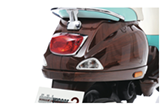
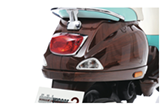

Introducing the
Vespa Tribute
Scheduled for release in June 2016, this limited edition scooter will only be produced 250 times. Enter your email below to be partnered with a Vespa representative who will ensure that you stay updated and informed about how be part of this exclusive venture.
The Adventure of a Lifetime
This Tribute was first envisioned by Vespa designer, Paul Fierce, who came across an iconic mahogany 1960's speedboat while vacationing in France. The Vespa Tribute was designed to not only be sophisticated in nature, but authentic in design. Top of the line materials mimic the craftsmanship of these legendary speedboats. It is meant to embody a true 1960's speedboat, bringing to life a feeling of lust, adventure, and affluence. Customizations will be available upon request.
Specifications
Photo Gallery

 

Enter your email to be connected with a personal Vespa Tribute representative.